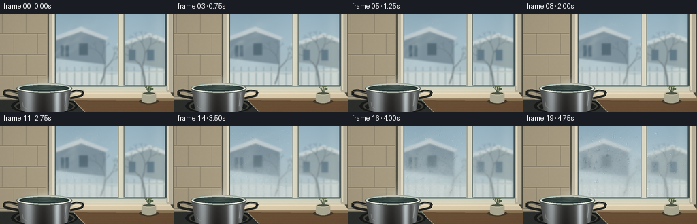
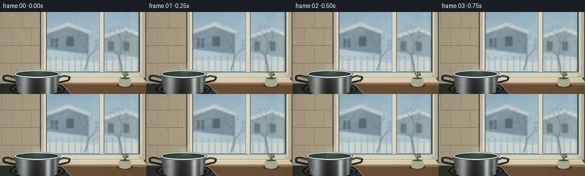

CODING AGENTS AS PIXEL WORLD MODELS
traex/GPT-6.1-Sol · phygen_112
点击播放 · 原生 RGB 像素
逐轮保存的候选
回放视频、检查图与代码变化。
每份候选均可单独播放。实际图片检查记录在下方工具轨迹中。
候选 01播放与检查图
点击播放 · 原生 RGB 像素


展开代码变化
--- 上一保存版本
+++ 本次保存版本
@@ -0,0 +1,250 @@
+from pathlib import Path
+import numpy as np
+from PIL import Image, ImageDraw, ImageFilter
+import artifact_io
+
+ROOT = Path(__file__).resolve().parent
+S = 3
+W,H = 256*S,144*S
+rng = np.random.default_rng(112)
+y,x = np.mgrid[0:H,0:W].astype(float)/S
+
+def noise(nx,ny,seed):
+ r=np.random.default_rng(seed)
+ im=Image.fromarray((r.random((ny,nx))*255).astype('uint8')).resize((W,H),Image.Resampling.BICUBIC)
+ return np.asarray(im).astype(float)/255
+n1=noise(32,20,40); n2=noise(120,75,70); n3=noise(8,5,19)
+grain=rng.normal(0,0.65,(H,W,1))
+
+def poly(draw,coords,fill): draw.polygon([(int(a*S),int(b*S)) for a,b in coords], fill=fill)
+def rect(draw,box,fill): draw.rectangle(tuple(int(v*S) for v in box),fill=fill)
+def line(draw,coords,fill,width=1): draw.line([(int(a*S),int(b*S)) for a,b in coords],fill=fill,width=max(1,int(width*S)))
+def ellipse(draw,box,fill,outline=None,width=1): draw.ellipse(tuple(int(v*S) for v in box),fill=fill,outline=outline,width=max(1,int(width*S)))
+
+# A gently defocused winter garden on the far side of the pane.
+sky=np.zeros((H,W,3),float)
+for k,(a,b) in enumerate(zip([150,179,195],[194,207,208])): sky[:,:,k]=a+(b-a)*np.clip(y/118,0,1)
+sky+=(n3[...,None]-.5)*13
+outside=Image.fromarray(np.uint8(np.clip(sky,0,255)))
+d=ImageDraw.Draw(outside)
+# distant masonry houses and frosty roof ridges
+poly(d,[(81,65),(81,32),(120,21),(155,36),(155,74)],(121,141,152))
+poly(d,[(76,34),(119,18),(160,34),(155,38),(119,25),(80,39)],(194,204,207))
+rect(d,(89,46,101,62),(75,99,114)); rect(d,(116,43,129,60),(78,99,110))
+line(d,[(95,45),(95,62)],(159,173,175),1)
+poly(d,[(178,70),(178,42),(220,31),(253,47),(253,81)],(148,164,168))
+poly(d,[(171,44),(220,27),(260,43),(259,48),(220,33),(176,48)],(205,215,215))
+for a in [189,216,243]: rect(d,(a,52,a+10,68),(93,118,132))
+# garden snow and fence
+poly(d,[(65,88),(119,84),(165,89),(230,79),(256,85),(256,122),(65,122)],(208,216,213))
+for a in np.arange(76,258,11):
+ line(d,[(a,77),(a,111)],(139,159,161),1.6)
+line(d,[(70,84),(256,84)],(162,178,178),2)
+line(d,[(70,85),(256,85)],(217,222,219),1)
+# bare winter branches, naturally irregular
+r=np.random.default_rng(54)
+def branch(px,py,angle,length,width,depth):
+ ex=px+np.cos(angle)*length; ey=py+np.sin(angle)*length
+ line(d,[(px,py),((px+ex)/2+1,(py+ey)/2),(ex,ey)],(78+depth*8,94+depth*7,100+depth*6),width)
+ if depth:
+ for delta in [-.51,.48]: branch(ex,ey,angle+delta+r.normal(0,.1),length*r.uniform(.55,.74),max(.35,width*.64),depth-1)
+branch(213,108,-1.72,30,3,5)
+branch(148,103,-1.3,25,2,4)
+outside=outside.filter(ImageFilter.GaussianBlur(1.0*S))
+# Slight blue cast and ambient interior reflection.
+clear=np.asarray(outside).astype(float)
+clear=.91*clear+.09*np.array([161,190,202])
+clear+=np.exp(-((x-234)/9)**2)[...,None]*np.array([9,8,5])
+blurred=np.asarray(Image.fromarray(np.uint8(clear)).filter(ImageFilter.GaussianBlur(3.4*S))).astype(float)
+panes=((x>=82)&(x<=173)&(y<=104))|((x>=183)&(x<=242)&(y<=104))
+
+# Interior wall with quiet warm tile, a thick wooden window casing and sill.
+wall=np.zeros((H,W,3),float)
+for k,v in enumerate([153,143,120]):wall[:,:,k]=v-25*(x/256)+10*(1-y/144)
+wall+=(n2[...,None]-.5)*4+grain
+static=Image.fromarray(np.uint8(np.clip(wall,0,255)))
+d=ImageDraw.Draw(static)
+rect(d,(0,0,69,124),(170,158,132))
+# small glazed tile joints
+for yy in [28,59,90,121]:
+ line(d,[(0,yy),(68,yy)],(126,118,99),1)
+ line(d,[(0,yy+1),(68,yy+1)],(191,179,153),.5)
+for row,yy in enumerate([-3,28,59,90]):
+ for xx in ([20,55] if row%2 else [3,38]):
+ line(d,[(xx,yy),(xx,yy+30)],(136,127,107),.8)
+# casing outer dark contact shadows
+rect(d,(70,0,256,120),(79,76,64))
+rect(d,(72,0,254,115),(190,183,163))
+rect(d,(77,0,248,111),(228,219,195))
+rect(d,(80,0,245,107),(94,101,97))
+# shadowed glass rebate
+rect(d,(81,0,244,105),(68,84,87))
+# vertical sash
+rect(d,(173,0,183,108),(163,164,147))
+rect(d,(175,0,181,106),(219,216,196))
+line(d,[(175,0),(175,104)],(232,227,207),.8)
+line(d,[(182,0),(182,104)],(96,110,108),1)
+# inner edges and bottom sash, reflected cool daylight
+line(d,[(80,0),(80,108)],(200,203,186),1.2)
+rect(d,(79,105,246,115),(173,178,163))
+rect(d,(81,107,244,113),(214,213,192))
+line(d,[(82,106),(243,106)],(114,133,129),.8)
+line(d,[(81,113),(245,113)],(238,230,202),.8)
+poly(d,[(69,115),(250,115),(256,124),(59,124)],(220,205,174))
+poly(d,[(59,124),(256,124),(256,128),(62,129)],(145,122,91))
+line(d,[(69,116),(250,116)],(241,229,204),1)
+# countertop behind stove
+poly(d,[(0,126),(256,128),(256,144),(0,144)],(102,77,53))
+for j in range(16):
+ yy=128+j*.94
+ line(d,[(0,yy),(256,yy+1.3)],(111+j%4*3,82+j%3*3,57),.3)
+# range surface at lower left
+poly(d,[(0,125),(108,127),(126,144),(0,144)],(47,49,46))
+line(d,[(0,125),(108,127),(125,144)],(146,146,128),1)
+ellipse(d,(16,123,114,147),(24,27,25))
+ellipse(d,(21,125,110,145),(66,66,58))
+ellipse(d,(24,127,107,144),(26,29,27))
+# small quiet ceramic jar, out of the steam path
+ellipse(d,(204,125,233,132),(68,57,43))
+rect(d,(208,117,229,128),(175,173,150))
+ellipse(d,(208,123,229,131),(175,173,150))
+ellipse(d,(208,114,229,119),(202,196,170))
+ellipse(d,(210,115,227,118),(74,83,69))
+for i in range(9):
+ xx=216+r.uniform(-7,7); yy=r.uniform(95,112)
+ line(d,[(219,116),(xx,yy)],(71,86,63),.8)
+ ellipse(d,(xx-2.3,yy-1.7,xx+2.3,yy+1.7),(79+i*2,100+i,72))
+static=np.asarray(static).astype(float)
+static+=(n2[...,None]-.5)*1.4+grain*.45
+
+# Foreground polished stainless saucepan, realistically rounded and shaded.
+potmask=Image.new('L',(W,H)); pd=ImageDraw.Draw(potmask)
+poly(pd,[(25,109),(105,109),(100,137),(94,141),(38,141),(30,137)],255)
+ellipse(pd,(30,130,100,147),255)
+pma=np.asarray(potmask)/255.
+# vertically reflected bright window alternating with dark kitchen.
+profile=74+82*np.exp(-((x-42)/8)**2)+122*np.exp(-((x-84)/4.6)**2)+53*np.exp(-((x-97)/3)**2)-31*np.exp(-((x-63)/11)**2)
+profile-=.45*(y-115)
+metal=np.stack([profile*.94+9,profile+6,profile*1.03+3],axis=-1)
+metal+=(n2[...,None]-.5)*2.2
+potrgb=np.clip(metal,0,255)
+# handles behind the body
+handles=Image.new('RGBA',(W,H));hd=ImageDraw.Draw(handles)
+line(hd,[(29,116),(13,112),(6,113),(6,119),(29,124)],(35,36,33,255),4)
+line(hd,[(28,116),(13,113),(7,114)],(143,143,128,255),1.3)
+line(hd,[(101,116),(112,112),(122,114),(120,120),(103,124)],(33,37,34,255),3.6)
+line(hd,[(104,116),(112,113),(120,114)],(168,173,155,255),1.0)
+# Steam wisps: volume texture advected upward, not moving geometry or camera.
+steamnoise=[noise(26,30,seed) for seed in [41,42,43]]
+# fixed nucleation sites on the inner face of the cold glass
+r=np.random.default_rng(817)
+drops=[]
+for i in range(1030):
+ xx=r.uniform(83,241); yy=r.uniform(4,103)
+ if 173<xx<183: continue
+ arrival=.12+.58*min(1,abs(xx-127)/107)+.15*max(0,(30-yy)/30)+r.uniform(0,.24)
+ if xx>183: arrival+=.09
+ radius=r.uniform(.18,.53)
+ if r.random()<.13: radius=r.uniform(.65,1.25)
+ drops.append((xx,yy,arrival,radius,r.uniform(.85,1.2),r.uniform(-.25,.25)))
+
+frames=[]
+for f in range(20):
+ t=f/19
+ # Contact area expands and fog gradually replaces the clear view.
+ front=(y-104+91*t)/(18+22*t)
+ contact=np.exp(-((x-(109+17*t))/(34+76*t))**2)
+ spread=np.clip(front,0,1)*contact
+ fog=np.clip((t-.06)*1.08*spread*(.82+.26*n1+.11*n2),0,.84)
+ fog*=panes
+ milky=.62*blurred+.38*np.array([211,220,217])
+ glass=clear*(1-fog[...,None])+milky*fog[...,None]
+ # Mottled matte bloom and extremely fine condensed bead texture.
+ glass+=(n2[...,None]-.5)*fog[...,None]*5
+ image=static.copy()
+ image[panes]=glass[panes]
+ # Lens-like rounded droplets growing out of the mist, then coalescing.
+ for xx,yy,birth,rad,aspect,lean in drops:
+ age=(t-birth)/(1-birth) if birth<1 else -1
+ if age<=0: continue
+ rr=rad*(.22+1.2*np.sqrt(age))
+ travel=max(0,age-.64)*38*max(0,rad-.68)
+ cy=yy+travel
+ if cy>103.3: continue
+ cx=xx+lean*travel*.15
+ ry=rr*aspect*(1+min(travel/20,.30))
+ if travel>0.15:
+ # A descending drop clears a fine track through the film.
+ x0=max(0,int((cx-rr*.45)*S));x1=min(W,int((cx+rr*.45)*S)+1)
+ y0=max(0,int(yy*S));y1=min(H,int(cy*S))
+ if y1>y0:
+ alpha=np.exp(-((x[y0:y1,x0:x1]-cx)/(rr*.31+.05))**2)*.30
+ alpha*=panes[y0:y1,x0:x1]
+ image[y0:y1,x0:x1]=image[y0:y1,x0:x1]*(1-alpha[...,None])+clear[y0:y1,x0:x1]*alpha[...,None]
+ x0=max(0,int((cx-rr-1)*S)); x1=min(W,int((cx+rr+1)*S)+1)
+ y0=max(0,int((cy-ry-1)*S)); y1=min(H,int((cy+ry+1)*S)+1)
+ u=(x[y0:y1,x0:x1]-cx)/rr;v=(y[y0:y1,x0:x1]-cy)/ry
+ q=u*u+v*v; mask=np.clip((1-q)*max(2,rr*S),0,1)*panes[y0:y1,x0:x1]
+ z=np.sqrt(np.maximum(0,1-q))
+ sx=np.clip(((cx+u*rr*.52+v*.8)*S).astype(int),0,W-1)
+ sy=np.clip(((cy+v*ry*.52+z*1.5)*S).astype(int),0,H-1)
+ refr=clear[sy,sx]*.43+image[y0:y1,x0:x1]*.57
+ rim=np.exp(-((np.sqrt(q)-.90)/.12)**2)
+ refr-=rim[...,None]*np.array([20,21,20])
+ shine=np.exp(-((u+.30)/.21)**2-((v+.43)/.18)**2)*77
+ shine+=np.exp(-((v-.72)/.12)**2-(u/.57)**2)*28
+ refr+=shine[...,None]
+ image[y0:y1,x0:x1]=image[y0:y1,x0:x1]*(1-mask[...,None])+refr*mask[...,None]
+ # translucent rising tendrils: drifting and curling while maintaining source.
+ h=np.clip((108-y)/100,0,1)
+ center=66+56*h+5*np.sin(9*h-2.7*t)*h
+ width=3.4+16*h
+ plume=np.zeros((H,W))
+ for k in range(4):
+ cc=center+(k-1.5)*(3+5*h)+np.sin(h*(12+k*2)-t*(6+k)+k)*width*.38
+ envelope=np.exp(-((x-cc)/(width*(.26+.09*k)))**2)
+ ripple=.5+.5*np.sin(15*h-7*t+k*1.7)
+ plume+=envelope*(.25+.20*ripple)
+ ty=np.mod((y*S).astype(int)+int(t*87*S),H)
+ tx=np.mod((x*S).astype(int)+int(t*12*S),W)
+ turb=steamnoise[0][ty,tx]*.53+steamnoise[1][ty,np.mod(tx+int(h.mean()*10),W)]*.47
+ density=plume*(.5+.8*turb)*.19
+ density*=np.clip((108-y)/6,0,1)*np.clip((y-4)/20,0,1)
+ density*=((y<109)&(y>3))
+ # faint billows catching side light above the hot water
+ density+=.10*np.exp(-((x-(64+7*np.sin(t*7)))/20)**2-((y-(98-2*np.sin(t*9)))/5)**2)
+ density=np.clip(density,0,.31)
+ image=image*(1-density[...,None])+np.array([225,229,217])*density[...,None]
+ # Handles and pan remain sharp, in front of vapor.
+ im=Image.fromarray(np.uint8(np.clip(image,0,255))).convert('RGBA')
+ im=Image.alpha_composite(im,handles)
+ image=np.asarray(im.convert('RGB')).astype(float)
+ image=image*(1-pma[...,None])+potrgb*pma[...,None]
+ im=Image.fromarray(np.uint8(np.clip(image,0,255)))
+ d=ImageDraw.Draw(im)
+ # lip, dark hot water and thin bright steel glints
+ ellipse(d,(24,101.4,106,116.5),(82,90,84))
+ ellipse(d,(25.4,102.4,104.7,114.7),(194,202,190))
+ ellipse(d,(28,104,102,113.5),(36,49,47))
+ ellipse(d,(31,105.3,99,112.5),(48,64,60))
+ # low contrast concentric ripples in the water surface
+ for k in range(3):
+ rx=8+k*8+1.2*np.sin(t*12+k)
+ box=((66-rx)*S,(108.6-1.4-k*.5)*S,(66+rx)*S,(108.6+1.4+k*.5)*S)
+ d.arc(tuple(int(v) for v in box),0,165,fill=(81,98,88),width=1)
+ d.arc(tuple(int(v*S) for v in (25,101.5,105,115.5)),0,180,fill=(230,235,220),width=2*S)
+ d.arc(tuple(int(v*S) for v in (25,101.5,105,115.5)),190,337,fill=(146,164,151),width=S)
+ line(d,[(33,130),(34,136),(39,139)],(179,182,166),.6)
+ line(d,[(97,117),(95,135)],(219,226,209),.55)
+ # Vapor starts inside the opening and flows seamlessly into the plume.
+ arr=np.asarray(im).astype(float)
+ vap=.20*np.exp(-((x-68-3*np.sin(9*t+(106-y)))/11)**2)*np.exp(-((y-103.0)/6.3)**2)
+ vap*=np.clip((113-y)/4,0,1)
+ arr=arr*(1-vap[...,None])+np.array([220,228,218])*vap[...,None]
+ # restrained lens vignette and film grain, downsampled for clean antialiasing
+ vig=1-.09*((x-135)/175)**2-.045*((y-65)/105)**2
+ arr=arr*vig[...,None]+grain*.35
+ final=Image.fromarray(np.uint8(np.clip(arr,0,255))).resize((256,144),Image.Resampling.LANCZOS)
+ frames.append(np.asarray(final))
+artifact_io.save(np.stack(frames).astype(np.uint8),ROOT)
+print('Saved 20 RGB frames at 256x144, 4 fps.')
可观测工具轨迹
实际执行的命令与返回图片。
命令 1exit 0
/bin/bash -lc 'ls -la && cat prompt.txt && cat GENERATION_RULES.md && cat task_spec.json'
命令 2exit 0
/bin/bash -lc "cat artifact_io.py && python - <<'PY' import numpy, PIL print(numpy.__version__,PIL.__version__) PY"
命令 3exit 0
/bin/bash -lc "cat > generate.py <<'PY'
from pathlib import Path
import numpy as np
from PIL import Image, ImageDraw, ImageFilter
import artifact_io
ROOT = Path(__file__).resolve().parent
S = 3
W,H = 256*S,144*S
rng = np.random.default_rng(112)
y,x = np.mgrid[0:H,0:W].astype(float)/S
def noise(nx,ny,seed):
r=np.random.default_rng(seed)
im=Image.fromarray((r.random((ny,nx))*255).astype('uint8')).resize((W,H),Image.Resampling.BICUBIC)
return np.asarray(im).astype(float)/255
n1=noise(32,20,40); n2=noise(120,75,70); n3=noise(8,5,19)
grain=rng.normal(0,0.65,(H,W,1))
def poly(draw,coords,fill): draw.polygon([(int(a*S),int(b*S)) for a,b in coords], fill=fill)
def rect(draw,box,fill): draw.rectangle(tuple(int(v*S) for v in box),fill=fill)
def line(draw,coords,fill,width=1): draw.line([(int(a*S),int(b*S)) for a,b in coords],fill=fill,width=max(1,int(width*S)))
def ellipse(draw,box,fill,outline=None,width=1): draw.ellipse(tuple(int(v*S) for v in box),fill=fill,outline=outline,width=max(1,int(width*S)))
# A gently defocused winter garden on the far side of the pane.
sky=np.zeros((H,W,3),float)
for k,(a,b) in enumerate(zip([150,179,195],[194,207,208])): sky[:,:,k]=a+(b-a)*np.clip(y/118,0,1)
sky+=(n3[...,None]-.5)*13
outside=Image.fromarray(np.uint8(np.clip(sky,0,255)))
d=ImageDraw.Draw(outside)
# distant masonry houses and frosty roof ridges
poly(d,[(81,65),(81,32),(120,21),(155,36),(155,74)],(121,141,152))
poly(d,[(76,34),(119,18),(160,34),(155,38),(119,25),(80,39)],(194,204,207))
rect(d,(89,46,101,62),(75,99,114)); rect(d,(116,43,129,60),(78,99,110))
line(d,[(95,45),(95,62)],(159,173,175),1)
poly(d,[(178,70),(178,42),(220,31),(253,47),(253,81)],(148,164,168))
poly(d,[(171,44),(220,27),(260,43),(259,48),(220,33),(176,48)],(205,215,215))
for a in [189,216,243]: rect(d,(a,52,a+10,68),(93,118,132))
# garden snow and fence
poly(d,[(65,88),(119,84),(165,89),(230,79),(256,85),(256,122),(65,122)],(208,216,213))
for a in np.arange(76,258,11):
line(d,[(a,77),(a,111)],(139,159,161),1.6)
line(d,[(70,84),(256,84)],(162,178,178),2)
line(d,[(70,85),(256,85)],(217,222,219),1)
# bare winter branches, naturally irregular
r=np.random.default_rng(54)
def branch(px,py,angle,length,width,depth):
ex=px+np.cos(angle)*length; ey=py+np.sin(angle)*length
line(d,[(px,py),((px+ex)/2+1,(py+ey)/2),(ex,ey)],(78+depth*8,94+depth*7,100+depth*6),width)
if depth:
for delta in [-.51,.48]: branch(ex,ey,angle+delta+r.normal(0,.1),length*r.uniform(.55,.74),max(.35,width*.64),depth-1)
branch(213,108,-1.72,30,3,5)
branch(148,103,-1.3,25,2,4)
outside=outside.filter(ImageFilter.GaussianBlur(1.0*S))
# Slight blue cast and ambient interior reflection.
clear=np.asarray(outside).astype(float)
clear=.91*clear+.09*np.array([161,190,202])
clear+=np.exp(-((x-234)/9)**2)[...,None]*np.array([9,8,5])
blurred=np.asarray(Image.fromarray(np.uint8(clear)).filter(ImageFilter.GaussianBlur(3.4*S))).astype(float)
panes=((x>=82)&(x<=173)&(y<=104))|((x>=183)&(x<=242)&(y<=104))
# Interior wall with quiet warm tile, a thick wooden window casing and sill.
wall=np.zeros((H,W,3),float)
for k,v in enumerate([153,143,120]):wall[:,:,k]=v-25*(x/256)+10*(1-y/144)
wall+=(n2[...,None]-.5)*4+grain
static=Image.fromarray(np.uint8(np.clip(wall,0,255)))
d=ImageDraw.Draw(static)
rect(d,(0,0,69,124),(170,158,132))
# small glazed tile joints
for yy in [28,59,90,121]:
line(d,[(0,yy),(68,yy)],(126,118,99),1)
line(d,[(0,yy+1),(68,yy+1)],(191,179,153),.5)
for row,yy in enumerate([-3,28,59,90]):
for xx in ([20,55] if row%2 else [3,38]):
line(d,[(xx,yy),(xx,yy+30)],(136,127,107),.8)
# casing outer dark contact shadows
rect(d,(70,0,256,120),(79,76,64))
rect(d,(72,0,254,115),(190,183,163))
rect(d,(77,0,248,111),(228,219,195))
rect(d,(80,0,245,107),(94,101,97))
# shadowed glass rebate
rect(d,(81,0,244,105),(68,84,87))
# vertical sash
rect(d,(173,0,183,108),(163,164,147))
rect(d,(175,0,181,106),(219,216,196))
line(d,[(175,0),(175,104)],(232,227,207),.8)
line(d,[(182,0),(182,104)],(96,110,108),1)
# inner edges and bottom sash, reflected cool daylight
line(d,[(80,0),(80,108)],(200,203,186),1.2)
rect(d,(79,105,246,115),(173,178,163))
rect(d,(81,107,244,113),(214,213,192))
line(d,[(82,106),(243,106)],(114,133,129),.8)
line(d,[(81,113),(245,113)],(238,230,202),.8)
poly(d,[(69,115),(250,115),(256,124),(59,124)],(220,205,174))
poly(d,[(59,124),(256,124),(256,128),(62,129)],(145,122,91))
line(d,[(69,116),(250,116)],(241,229,204),1)
# countertop behind stove
poly(d,[(0,126),(256,128),(256,144),(0,144)],(102,77,53))
for j in range(16):
yy=128+j*.94
line(d,[(0,yy),(256,yy+1.3)],(111+j%4*3,82+j%3*3,57),.3)
# range surface at lower left
poly(d,[(0,125),(108,127),(126,144),(0,144)],(47,49,46))
line(d,[(0,125),(108,127),(125,144)],(146,146,128),1)
ellipse(d,(16,123,114,147),(24,27,25))
ellipse(d,(21,125,110,145),(66,66,58))
ellipse(d,(24,127,107,144),(26,29,27))
# small quiet ceramic jar, out of the steam path
ellipse(d,(204,125,233,132),(68,57,43))
rect(d,(208,117,229,128),(175,173,150))
ellipse(d,(208,123,229,131),(175,173,150))
ellipse(d,(208,114,229,119),(202,196,170))
ellipse(d,(210,115,227,118),(74,83,69))
for i in range(9):
xx=216+r.uniform(-7,7); yy=r.uniform(95,112)
line(d,[(219,116),(xx,yy)],(71,86,63),.8)
ellipse(d,(xx-2.3,yy-1.7,xx+2.3,yy+1.7),(79+i*2,100+i,72))
static=np.asarray(static).astype(float)
static+=(n2[...,None]-.5)*1.4+grain*.45
# Foreground polished stainless saucepan, realistically rounded and shaded.
potmask=Image.new('L',(W,H)); pd=ImageDraw.Draw(potmask)
poly(pd,[(25,109),(105,109),(100,137),(94,141),(38,141),(30,137)],255)
ellipse(pd,(30,130,100,147),255)
pma=np.asarray(potmask)/255.
# vertically reflected bright window alternating with dark kitchen.
profile=74+82*np.exp(-((x-42)/8)**2)+122*np.exp(-((x-84)/4.6)**2)+53*np.exp(-((x-97)/3)**2)-31*np.exp(-((x-63)/11)**2)
profile-=.45*(y-115)
metal=np.stack([profile*.94+9,profile+6,profile*1.03+3],axis=-1)
metal+=(n2[...,None]-.5)*2.2
potrgb=np.clip(metal,0,255)
# handles behind the body
handles=Image.new('RGBA',(W,H));hd=ImageDraw.Draw(handles)
line(hd,[(29,116),(13,112),(6,113),(6,119),(29,124)],(35,36,33,255),4)
line(hd,[(28,116),(13,113),(7,114)],(143,143,128,255),1.3)
line(hd,[(101,116),(112,112),(122,114),(120,120),(103,124)],(33,37,34,255),3.6)
line(hd,[(104,116),(112,113),(120,114)],(168,173,155,255),1.0)
# Steam wisps: volume texture advected upward, not moving geometry or camera.
steamnoise=[noise(26,30,seed) for seed in [41,42,43]]
# fixed nucleation sites on the inner face of the cold glass
r=np.random.default_rng(817)
drops=[]
for i in range(1030):
xx=r.uniform(83,241); yy=r.uniform(4,103)
if 173<xx<183: continue
arrival=.12+.58*min(1,abs(xx-127)/107)+.15*max(0,(30-yy)/30)+r.uniform(0,.24)
if xx>183: arrival+=.09
radius=r.uniform(.18,.53)
if r.random()<.13: radius=r.uniform(.65,1.25)
drops.append((xx,yy,arrival,radius,r.uniform(.85,1.2),r.uniform(-.25,.25)))
frames=[]
for f in range(20):
t=f/19
# Contact area expands and fog gradually replaces the clear view.
front=(y-104+91*t)/(18+22*t)
contact=np.exp(-((x-(109+17*t))/(34+76*t))**2)
spread=np.clip(front,0,1)*contact
fog=np.clip((t-.06)*1.08*spread*(.82+.26*n1+.11*n2),0,.84)
fog*=panes
milky=.62*blurred+.38*np.array([211,220,217])
glass=clear*(1-fog[...,None])+milky*fog[...,None]
# Mottled matte bloom and extremely fine condensed bead texture.
glass+=(n2[...,None]-.5)*fog[...,None]*5
image=static.copy()
image[panes]=glass[panes]
# Lens-like rounded droplets growing out of the mist, then coalescing.
for xx,yy,birth,rad,aspect,lean in drops:
age=(t-birth)/(1-birth) if birth<1 else -1
if age<=0: continue
rr=rad*(.22+1.2*np.sqrt(age))
travel=max(0,age-.64)*38*max(0,rad-.68)
cy=yy+travel
if cy>103.3: continue
cx=xx+lean*travel*.15
ry=rr*aspect*(1+min(travel/20,.30))
if travel>0.15:
# A descending drop clears a fine track through the film.
x0=max(0,int((cx-rr*.45)*S));x1=min(W,int((cx+rr*.45)*S)+1)
y0=max(0,int(yy*S));y1=min(H,int(cy*S))
if y1>y0:
alpha=np.exp(-((x[y0:y1,x0:x1]-cx)/(rr*.31+.05))**2)*.30
alpha*=panes[y0:y1,x0:x1]
image[y0:y1,x0:x1]=image[y0:y1,x0:x1]*(1-alpha[...,None])+clear[y0:y1,x0:x1]*alpha[...,None]
x0=max(0,int((cx-rr-1)*S)); x1=min(W,int((cx+rr+1)*S)+1)
y0=max(0,int((cy-ry-1)*S)); y1=min(H,int((cy+ry+1)*S)+1)
u=(x[y0:y1,x0:x1]-cx)/rr;v=(y[y0:y1,x0:x1]-cy)/ry
q=u*u+v*v; mask=np.clip((1-q)*max(2,rr*S),0,1)*panes[y0:y1,x0:x1]
z=np.sqrt(np.maximum(0,1-q))
sx=np.clip(((cx+u*rr*.52+v*.8)*S).astype(int),0,W-1)
sy=np.clip(((cy+v*ry*.52+z*1.5)*S).astype(int),0,H-1)
refr=clear[sy,sx]*.43+image[y0:y1,x0:x1]*.57
rim=np.exp(-((np.sqrt(q)-.90)/.12)**2)
refr-=rim[...,None]*np.array([20,21,20])
shine=np.exp(-((u+.30)/.21)**2-((v+.43)/.18)**2)*77
shine+=np.exp(-((v-.72)/.12)**2-(u/.57)**2)*28
refr+=shine[...,None]
image[y0:y1,x0:x1]=image[y0:y1,x0:x1]*(1-mask[...,None])+refr*mask[...,None]
# translucent rising tendrils: drifting and curling while maintaining source.
h=np.clip((108-y)/100,0,1)
center=66+56*h+5*np.sin(9*h-2.7*t)*h
width=3.4+16*h
plume=np.zeros((H,W))
for k in range(4):
cc=center+(k-1.5)*(3+5*h)+np.sin(h*(12+k*2)-t*(6+k)+k)*width*.38
envelope=np.exp(-((x-cc)/(width*(.26+.09*k)))**2)
ripple=.5+.5*np.sin(15*h-7*t+k*1.7)
plume+=envelope*(.25+.20*ripple)
ty=np.mod((y*S).astype(int)+int(t*87*S),H)
tx=np.mod((x*S).astype(int)+int(t*12*S),W)
turb=steamnoise[0][ty,tx]*.53+steamnoise[1][ty,np.mod(tx+int(h.mean()*10),W)]*.47
density=plume*(.5+.8*turb)*.19
density*=np.clip((108-y)/6,0,1)*np.clip((y-4)/20,0,1)
density*=((y<109)&(y>3))
# faint billows catching side light above the hot water
density+=.10*np.exp(-((x-(64+7*np.sin(t*7)))/20)**2-((y-(98-2*np.sin(t*9)))/5)**2)
density=np.clip(density,0,.31)
image=image*(1-density[...,None])+np.array([225,229,217])*density[...,None]
# Handles and pan remain sharp, in front of vapor.
im=Image.fromarray(np.uint8(np.clip(image,0,255))).convert('RGBA')
im=Image.alpha_composite(im,handles)
image=np.asarray(im.convert('RGB')).astype(float)
image=image*(1-pma[...,None])+potrgb*pma[...,None]
im=Image.fromarray(np.uint8(np.clip(image,0,255)))
d=ImageDraw.Draw(im)
# lip, dark hot water and thin bright steel glints
ellipse(d,(24,101.4,106,116.5),(82,90,84))
ellipse(d,(25.4,102.4,104.7,114.7),(194,202,190))
ellipse(d,(28,104,102,113.5),(36,49,47))
ellipse(d,(31,105.3,99,112.5),(48,64,60))
# low contrast concentric ripples in the water surface
for k in range(3):
rx=8+k*8+1.2*np.sin(t*12+k)
box=((66-rx)*S,(108.6-1.4-k*.5)*S,(66+rx)*S,(108.6+1.4+k*.5)*S)
d.arc(tuple(int(v) for v in box),0,165,fill=(81,98,88),width=1)
d.arc(tuple(int(v*S) for v in (25,101.5,105,115.5)),0,180,fill=(230,235,220),width=2*S)
d.arc(tuple(int(v*S) for v in (25,101.5,105,115.5)),190,337,fill=(146,164,151),width=S)
line(d,[(33,130),(34,136),(39,139)],(179,182,166),.6)
line(d,[(97,117),(95,135)],(219,226,209),.55)
# Vapor starts inside the opening and flows seamlessly into the plume.
arr=np.asarray(im).astype(float)
vap=.20*np.exp(-((x-68-3*np.sin(9*t+(106-y)))/11)**2)*np.exp(-((y-103.0)/6.3)**2)
vap*=np.clip((113-y)/4,0,1)
arr=arr*(1-vap[...,None])+np.array([220,228,218])*vap[...,None]
# restrained lens vignette and film grain, downsampled for clean antialiasing
vig=1-.09*((x-135)/175)**2-.045*((y-65)/105)**2
arr=arr*vig[...,None]+grain*.35
final=Image.fromarray(np.uint8(np.clip(arr,0,255))).resize((256,144),Image.Resampling.LANCZOS)
frames.append(np.asarray(final))
artifact_io.save(np.stack(frames).astype(np.uint8),ROOT)
print('Saved 20 RGB frames at 256x144, 4 fps.')
PY
python generate.py"命令 4exit 2
/bin/bash -lc "python - <<'PY'
from pathlib import Path
import numpy as np
from PIL import Image
p=Path('.')
z=np.load('pixels.npz')['pixels']
assert z.shape==(144,256,20)
files=sorted(p.glob('frames/*.png'))
assert len(files)==20
assert all(Image.open(f).mode=='RGB' and Image.open(f).size==(256,144) for f in files)
a=np.array(Image.open(files[0])).astype(float); b=np.array(Image.open(files[-1])).astype(float)
print('Verified:', z.shape, '20 RGB images, viewer:',p.joinpath('index.html').exists())
print('Mean first-to-last RGB change:',round(np.abs(a-b).mean(),2))
PY
if command -v ffmpeg >/dev/null 2>&1; then ffmpeg -y -loglevel error -framerate 4 -i frames/%02d.png -c:v libx264 -crf 17 -pix_fmt yuv420p -r 4 video.mp4; fi
ls -lh pixels.npz index.html video.mp4"保存候选 1 份；完成命令 4 次；可验证图片返回 0 张。原始 API 响应与完整日志保留在本地。